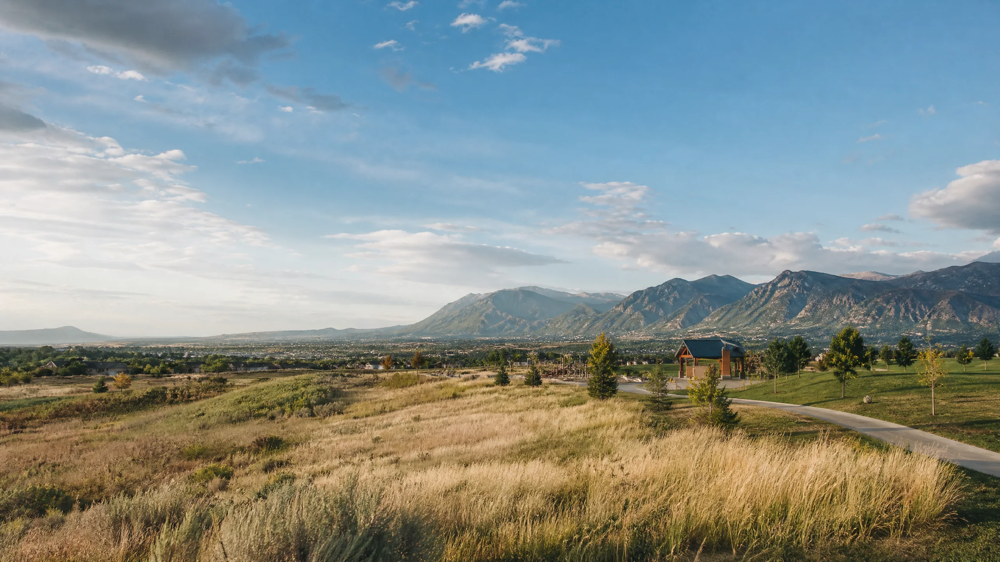

01 · IDENTIFY
Business and team garments
For a consistent apparel program, explain the logo use, staff or role differences, garment demands, first-run quantity, and how reorders might be handled.
Security-Widefield · Custom apparel
Custom screen printing Security-Widefield CO for business apparel, group shirts, events, and merchandise. Start with artwork, garments, quantity, and deadline.

A straightforward Security-Widefield apparel brief
Security-Widefield apparel projects can be functional business programs, group-event shirts, family or community pieces, and branded merchandise. The difference between an easy order and a difficult one often comes down to how clearly the details are gathered before production begins.
ARK is based in Colorado Springs and serves Security-Widefield through a quote-first process. Share the artwork or concept, garment needs, quantity, print locations, timeline, and any practical requirements for the finished garments.

Scope the order for the people wearing it
These are general custom-apparel scenarios, not claims of affiliation with a local school, team, organization, or employer.
01 · IDENTIFY
For a consistent apparel program, explain the logo use, staff or role differences, garment demands, first-run quantity, and how reorders might be handled.
02 · SHARE
A date, approximate count, size range, artwork, and print-location plan helps move a group order from idea to a manageable production brief.
03 · PROMOTE
For a product or promotion, include the intended audience, garment look and feel, artwork scale, quantity, and whether the item will need a repeat run.
Start with the working details
The apparel type, artwork, quantity, schedule, and expected wear are more valuable than a generic request for a printed shirt.
Quote-first workflow

Choose the finish after the brief
A functional work piece, a commemorative group tee, and a detailed merchandise graphic have different priorities. The quote is the place to compare which production method fits the garment and design best.
Use the quote form to describe the project. These service pages can help you understand the production conversation before you submit it.
Questions before you quote?
Short answers to the decisions that make a custom-apparel request easier to scope.
Yes. ARK is based in Colorado Springs and serves Security-Widefield through its quote-first workflow.
Yes. List the garment styles, colors, quantities, and artwork or placement differences so each part of the project can be reviewed accurately.
Include the personalization requirements, quantity, garments, artwork, and delivery date in the quote request.
An approximate size range is a helpful start. State what is confirmed and what remains estimated in the form.
Start your project
Share your artwork, garment direction, quantity, print locations, and deadline. ARK will turn those details into a clear production recommendation for your project.